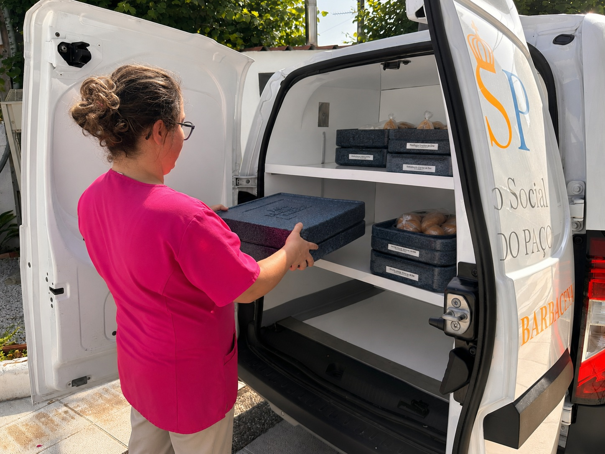
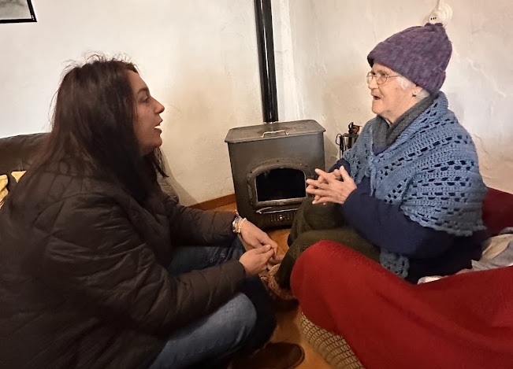
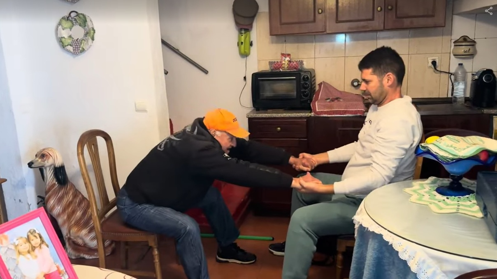
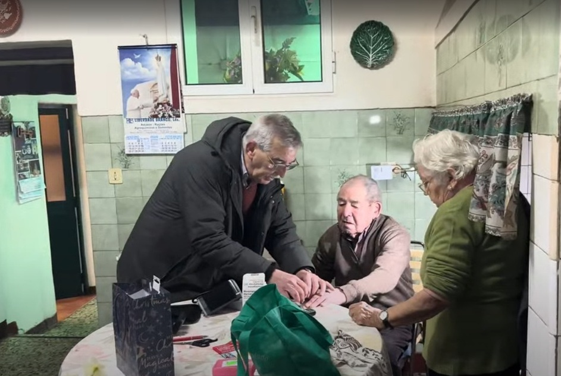

Conheça alguns momentos do nosso Serviço de Apoio Domiciliário.




Sobre o Apoio Domiciliário
O Serviço de Apoio Domiciliário, enquanto resposta social de apoio à terceira idade, consiste na prestação de cuidados individualizados e personalizados no domicílio.
Destina-se a pessoas e famílias que, por motivo de doença, deficiência, dependência ou outro impedimento, não conseguem assegurar temporária ou permanentemente a satisfação das suas necessidades básicas ou as atividades da vida diária.
Esta resposta procura contribuir para que cada utente possa permanecer na sua própria residência, junto da família, das suas referências afetivas e do seu ambiente habitual.
A nossa equipa trabalha de forma próxima e humanizada, procurando responder às necessidades físicas, emocionais e sociais de cada pessoa, promovendo o bem-estar, a segurança e a autonomia.
Objetivos
Contribuir para a melhoria da qualidade de vida dos utentes e das suas famílias, assegurando a satisfação das suas necessidades básicas.
Assegurar o apoio psicossocial aos utentes e às suas famílias, contribuindo para o bem-estar emocional e a integração social.
Colaborar na manutenção da saúde física do utente através da prestação de cuidados adequados.
Retardar ou evitar a institucionalização permanente, proporcionando à pessoa os cuidados necessários na sua própria residência.
Desenvolver atividades recreativas que previnam o isolamento social e promovam a integração do utente na comunidade.
Contacte-nos
Pretende obter mais informações sobre esta resposta social, esclarecer alguma dúvida ou solicitar apoio? Teremos todo o gosto em ajudá-lo.